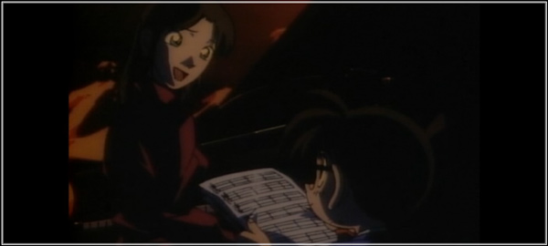

なんだこのページは…？
とってもどうでもいいことや、「あれれ〜おかしいぞ〜？」と思ったことを書いただけだよ！
緋色シリーズと全然関係ないこともあるからね！
【 緋色シリーズのタイトル 】
「由来は『シャーロック・ホームズ』の記念すべき第一作「緋色の研究」。
"緋色"と"赤＝本作のメインである赤井さん"をかけたダブルミーニングになってるんだ。」
【 片手でショットガン 】
「ベルモットが『私を撃った時も片手はポケットの中だった』って言ってたよね。
それってつまり片手でショットガンを撃ったってことだよね？ でも…」
「あれれ〜！？ 回想では片手で撃ってるのに、2元ミステリー放送時は両手だよ？
ねえ赤井さんどうして〜？！ 赤井さ〜ん！！」
【 安室透流 盗聴器の仕掛け方 】
「"ジョディの追憶とお花見の罠"のお話だね。逃げる安室さん(変装中)の腕を掴んで…」
「公安警察なのにこんなことして〜…ダメだよ安室さん。
ボクに盗聴器仕掛けるのも、もうしないでね？」
【 名エピソード人気投票 】
「見事1位に輝いた緋色シリーズだけど、他にどんなエピソードが選ばれたのか紹介するよ。」
2位 そして人魚はいなくなった
「はっt…平次兄ちゃんと和葉姉ちゃんがメインのお話だよ。
和葉姉ちゃんを助けるために「動いたら殺すぞ」って言ったんだって。
劇場版第21作の"から紅の恋歌"と繋がっているのもポイントだね！」
3位 ピアノソナタ「月光」殺人事件

「今まで起きた事件で唯一、犯人が死んでしまうエピソードだよ。
ボクはこれ以来、犯人を死なせないことを誓ったんだ。」
「4位には俺…いや、新一兄ちゃんが蘭姉ちゃんに告白する"ホームズの黙示録"
5位には、警視庁が爆破犯に立ち向かう"揺れる警視庁 1200万人の人質"がランクインしてるよ！」